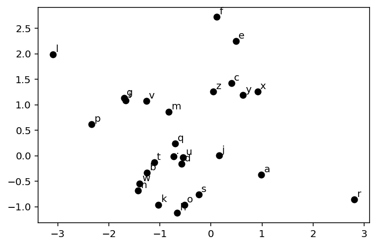
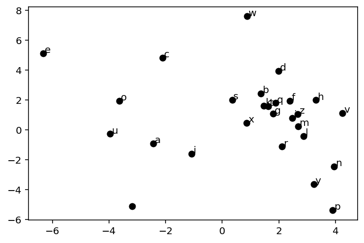

import torch
import torch.nn.functional as F
from torch import nn
import pandas as pd
import matplotlib.pyplot as plt # for making figures
%matplotlib inline
%config InlineBackend.figure_format = 'retina'Generating names using MLPs
Generating names
torch.__version__'2.0.0+cu118'device = torch.device("cuda" if torch.cuda.is_available() else "cpu")# Get some names from https://github.com/MASTREX/List-of-Indian-Names!wget https://raw.githubusercontent.com/balasahebgulave/Dataset-Indian-Names/master/Indian_Names.csv -O names-long.csv--2023-03-31 17:00:55-- https://raw.githubusercontent.com/balasahebgulave/Dataset-Indian-Names/master/Indian_Names.csv
Resolving raw.githubusercontent.com (raw.githubusercontent.com)... 185.199.110.133, 185.199.109.133, 185.199.108.133, ...
Connecting to raw.githubusercontent.com (raw.githubusercontent.com)|185.199.110.133|:443... connected.
HTTP request sent, awaiting response... 200 OK
Length: 85538 (84K) [text/plain]
Saving to: ‘names-long.csv’
names-long.csv 100%[===================>] 83.53K --.-KB/s in 0.07s
2023-03-31 17:00:55 (1.12 MB/s) - ‘names-long.csv’ saved [85538/85538]
!head names-long.csv,Name
0,aabid
1,aabida
2,aachal
3,aadesh
4,aadil
5,aadish
6,aaditya
7,aaenab
8,aafreenwords = pd.read_csv('names-long.csv')["Name"]
words = words.str.lower()
words = words.str.strip()
words = words.str.replace(" ", "")
words = words[words.str.len() > 2]
words = words[words.str.len() < 10]
# Randomly shuffle the words
words = words.sample(frac=1).reset_index(drop=True)
words = words.tolist()
# Remove words having non alphabets
words = [word for word in words if word.isalpha()]
words[:10]['sehran',
'iema',
'bajinder',
'manoj',
'nayaka',
'ajmal',
'navleen',
'akhtari',
'samsung',
'imtyaz']len(words)6184# build the vocabulary of characters and mappings to/from integers
chars = sorted(list(set(''.join(words))))
stoi = {s:i+1 for i,s in enumerate(chars)}
stoi['.'] = 0
itos = {i:s for s,i in stoi.items()}
print(itos){1: 'a', 2: 'b', 3: 'c', 4: 'd', 5: 'e', 6: 'f', 7: 'g', 8: 'h', 9: 'i', 10: 'j', 11: 'k', 12: 'l', 13: 'm', 14: 'n', 15: 'o', 16: 'p', 17: 'q', 18: 'r', 19: 's', 20: 't', 21: 'u', 22: 'v', 23: 'w', 24: 'x', 25: 'y', 26: 'z', 0: '.'}block_size = 4 # context length: how many characters do we take to predict the next one?
X, Y = [], []
for w in words[:]:
#print(w)
context = [0] * block_size
for ch in w + '.':
ix = stoi[ch]
X.append(context)
Y.append(ix)
#print(''.join(itos[i] for i in context), '--->', itos[ix])
context = context[1:] + [ix] # crop and append
# Move data to GPU
X = torch.tensor(X).to(device)
Y = torch.tensor(Y).to(device)X.shape, X.dtype, Y.shape, Y.dtype(torch.Size([44325, 4]), torch.int64, torch.Size([44325]), torch.int64)# Embedding layer for the context
emb_dim = 2
emb = torch.nn.Embedding(len(stoi), emb_dim)emb.weightParameter containing:
tensor([[-0.7321, -0.0133],
[ 0.9890, -0.3715],
[-1.2565, -0.3346],
[ 0.3989, 1.4209],
[-0.5718, -0.1615],
[ 0.4853, 2.2499],
[ 0.1107, 2.7214],
[-1.7009, 1.1288],
[-0.6636, -1.1188],
[-1.6768, 1.0876],
[ 0.1645, 0.0063],
[-1.0367, -0.9603],
[-3.0939, 1.9831],
[-0.8332, 0.8572],
[-1.4305, -0.6878],
[-0.5197, -0.9626],
[-2.3395, 0.6205],
[-0.7045, 0.2387],
[ 2.8074, -0.8545],
[-0.2396, -0.7623],
[-1.1135, -0.1288],
[-0.5464, -0.0345],
[-1.2686, 1.0719],
[-1.3973, -0.5510],
[ 0.9127, 1.2566],
[ 0.6278, 1.1915],
[ 0.0465, 1.2633]], requires_grad=True)# Function to visualize the embedding in 2d space
def plot_emb(emb, itos, ax=None):
if ax is None:
fig, ax = plt.subplots()
for i in range(len(itos)):
x, y = emb.weight[i].detach().cpu().numpy()
ax.scatter(x, y, color='k')
ax.text(x + 0.05, y + 0.05, itos[i])
return ax
plot_emb(emb, itos)<AxesSubplot:>
class NextChar(nn.Module):
def __init__(self, block_size, vocab_size, emb_dim, hidden_size):
super().__init__()
self.emb = nn.Embedding(vocab_size, emb_dim)
self.lin1 = nn.Linear(block_size * emb_dim, hidden_size)
self.lin2 = nn.Linear(hidden_size, vocab_size)
def forward(self, x):
x = self.emb(x)
x = x.view(x.shape[0], -1)
x = F.relu(self.lin1(x))
x = self.lin2(x)
return x
# Generate names from untrained model
model = NextChar(block_size, len(stoi), emb_dim, 50).to(device)
model = torch.compile(model)
g = torch.Generator()
g.manual_seed(4000002)
def generate_name(model, itos, stoi, block_size, max_len=10):
context = [0] * block_size
name = ''
for i in range(max_len):
x = torch.tensor(context).view(1, -1).to(device)
y_pred = model(x)
ix = torch.distributions.categorical.Categorical(logits=y_pred).sample().item()
ch = itos[ix]
if ch == '.':
break
name += ch
context = context[1:] + [ix]
return name
for i in range(10):
print(generate_name(model, itos, stoi, block_size))/home/nipun.batra/miniforge3/lib/python3.9/site-packages/torch/_inductor/compile_fx.py:90: UserWarning: TensorFloat32 tensor cores for float32 matrix multiplication available but not enabled. Consider setting `torch.set_float32_matmul_precision('high')` for better performance.
warnings.warn(ihjzyewjrp
puijjpnwfk
gcvvflic
eeokqgmlse
yiaghsikiv
smmggfnsot
ptdmdlmwfi
yitpyixshw
gjqapafodl
dfuhgoowtbfor param_name, param in model.named_parameters():
print(param_name, param.shape)emb.weight torch.Size([27, 2])
lin1.weight torch.Size([50, 8])
lin1.bias torch.Size([50])
lin2.weight torch.Size([27, 50])
lin2.bias torch.Size([27])# Train the model
loss_fn = nn.CrossEntropyLoss()
opt = torch.optim.AdamW(model.parameters(), lr=0.01)
import time
# Mini-batch training
batch_size = 4096*32
print_every = 400
elapsed_time = []
for epoch in range(10000):
start_time = time.time()
for i in range(0, X.shape[0], batch_size):
x = X[i:i+batch_size]
y = Y[i:i+batch_size]
y_pred = model(x)
loss = loss_fn(y_pred, y)
loss.backward()
opt.step()
opt.zero_grad()
end_time = time.time()
elapsed_time.append(end_time - start_time)
if epoch % print_every == 0:
print(epoch, loss.item())
print("Time taken for 1 epochs: {} seconds".format(sum(elapsed_time)/print_every))0 2.0890238285064697
Time taken for 1 epochs: 6.577968597412109e-06 seconds
400 2.0890519618988037
Time taken for 1 epochs: 0.0018871128559112549 seconds
800 2.088754177093506
Time taken for 1 epochs: 0.0037400954961776733 seconds
1200 2.0887293815612793
Time taken for 1 epochs: 0.005593389868736267 seconds
1600 2.0884861946105957
Time taken for 1 epochs: 0.007446771860122681 seconds
2000 2.0891528129577637
Time taken for 1 epochs: 0.009300289154052734 seconds
2400 2.0879929065704346
Time taken for 1 epochs: 0.011153245568275452 seconds
2800 2.088449239730835
Time taken for 1 epochs: 0.013006348609924317 seconds
3200 2.0879693031311035
Time taken for 1 epochs: 0.014860434532165527 seconds
3600 2.0881006717681885
Time taken for 1 epochs: 0.016712880134582518 seconds
4000 2.087575912475586
Time taken for 1 epochs: 0.01856597661972046 seconds
4400 2.087235689163208
Time taken for 1 epochs: 0.020418978929519653 seconds
4800 2.087622880935669
Time taken for 1 epochs: 0.02227234423160553 seconds
5200 2.087576150894165
Time taken for 1 epochs: 0.02412549138069153 seconds
5600 2.0879015922546387
Time taken for 1 epochs: 0.025978831052780153 seconds
6000 2.088137626647949
Time taken for 1 epochs: 0.027831865549087523 seconds
6400 2.0875606536865234
Time taken for 1 epochs: 0.029685078263282774 seconds
6800 2.0870373249053955
Time taken for 1 epochs: 0.031538299322128295 seconds
7200 2.0867090225219727
Time taken for 1 epochs: 0.033391504883766174 seconds
7600 2.085026979446411
Time taken for 1 epochs: 0.035245080590248105 seconds
8000 2.0854732990264893
Time taken for 1 epochs: 0.03710031807422638 seconds
8400 2.0843679904937744
Time taken for 1 epochs: 0.03895375490188599 seconds
8800 2.084249258041382
Time taken for 1 epochs: 0.04080682039260864 seconds
9200 2.0851705074310303
Time taken for 1 epochs: 0.042660011649131774 seconds
9600 2.0844883918762207
Time taken for 1 epochs: 0.044512977004051206 seconds# Visualize the embedding
plot_emb(model.emb, itos)<AxesSubplot:>
# Generate names from trained model
for i in range(10):
print(generate_name(model, itos, stoi, block_size))swina
miter
jakul
poshaban
nahmishsir
jaillanam
fibwahir
gurs
sakinu
ramtaTuning knobs
- Embedding size
- MLP
- Context length